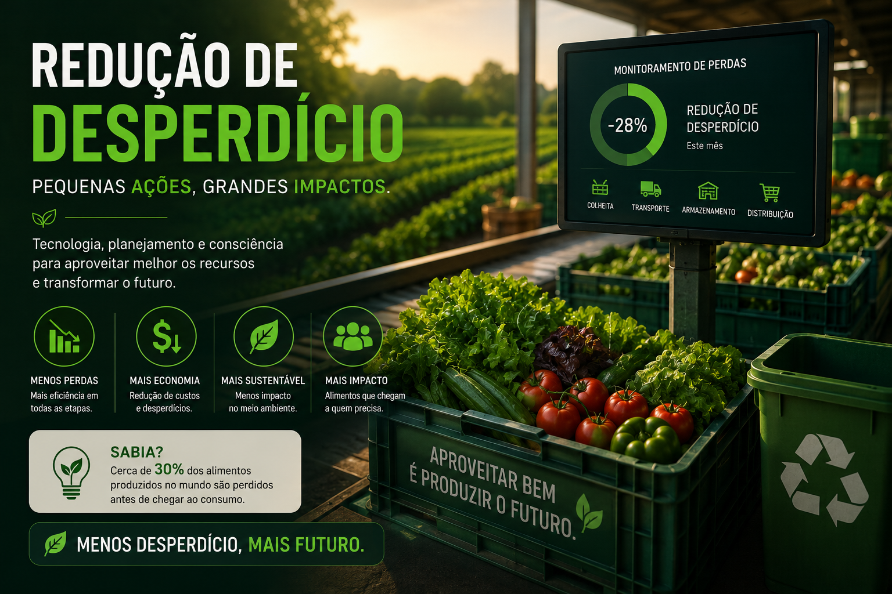

Tecnologias modernas evitam perdas durante a produção agrícola.
A redução de desperdício consiste no uso de tecnologias e boas práticas para diminuir perdas durante o plantio, colheita, armazenamento e transporte dos alimentos. Com sensores, inteligência artificial e monitoramento em tempo real, é possível utilizar recursos de forma mais eficiente e produzir mais com menos.
Analisa dados da produção e identifica desperdícios, permitindo decisões rápidas e eficientes.
Monitoram umidade, temperatura e armazenamento, evitando perdas por condições inadequadas.
Aplica água, fertilizantes e defensivos apenas onde necessário, reduzindo desperdícios e aumentando a eficiência.
Redução de perdas na produção
Aproveitamento dos recursos
Consumo de água e insumos